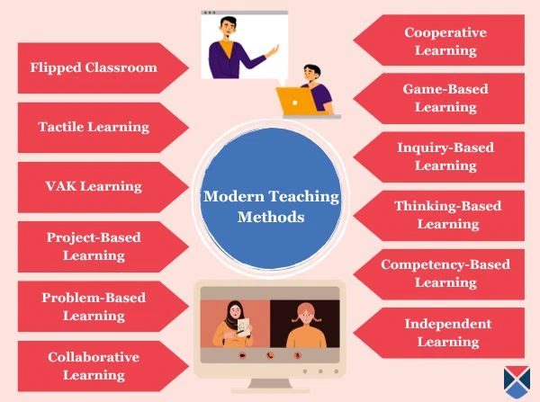

Conference Topic
Teaching Methods

The term teaching method refers to the general principles, pedagogy and management strategies used for classroom
instruction
.
Your choice of teaching method depends on what fits you — your educational philosophy, classroom demographic, subject
area(s) and school mission statement.
Teaching theories can be organized into four categories based on two major parameters: a teacher-centered approach
versus a student-centered approach, and high-tech material use versus low-tech material use.:
- Location: Karachi
- Date: 19-12-2023
- Time: 12:00 p.m
- Registration fee: 5000Rs/-
Teaching Methods conference schedule:
- Registration:
- Open Remarks:
- Lunch:
For more information and to register for the conference, please visit the Conference Registration Page.